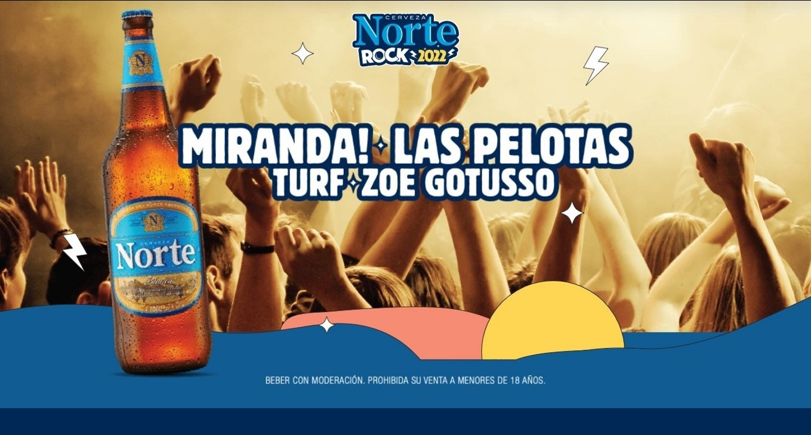
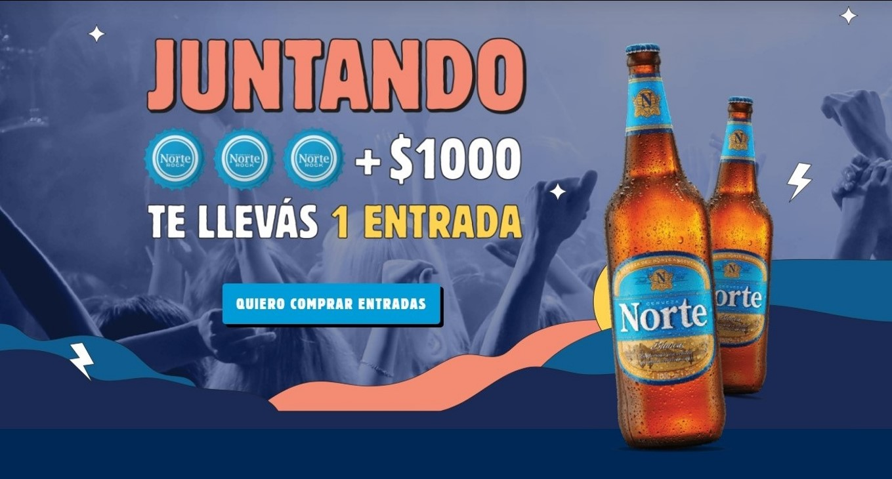
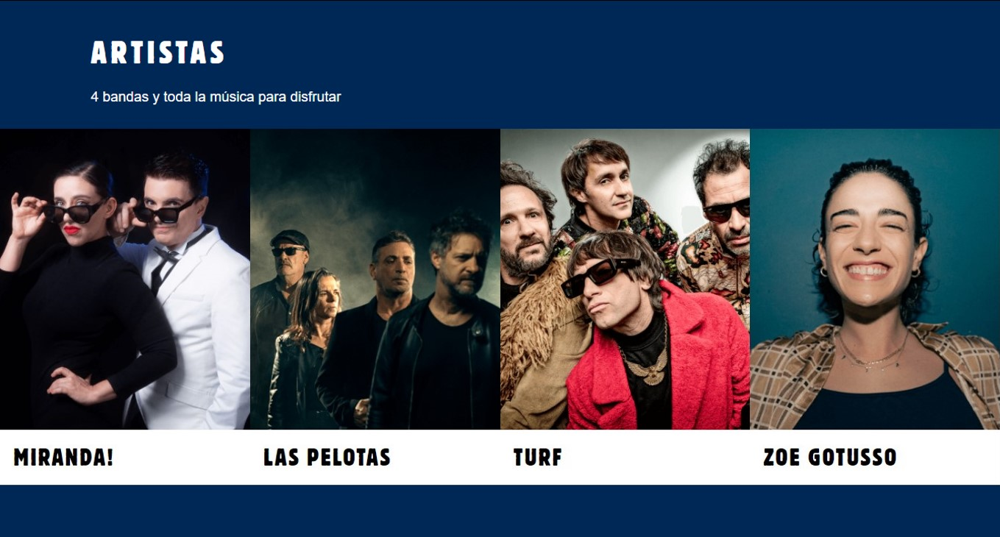

Las Pelotas es un grupo musical de Argentina fundado en 1988, en la ciudad de Hurlingham, Buenos Aires tras la muerte de Luca Prodan, líder de Sumo, con una base formada por exintegrantes de ese grupo.
Turf es una banda de rock argentina, formada en diciembre del año 1995. Se caracterizaron por tener un sonido del clásico rock de los años 1970, con claras influencias del britpop e indie pop.
Miranda! es una banda argentina de pop liderada por los cantantes Alejandro Sergi y Juliana Gattas. Se formó a mediados de 2001 y su nombre es un homenaje al actor argentino Osvaldo Miranda.
Zoe Gotusso es una cantante y compositora argentina. Tuvo reconocimiento como parte del dúo Salvapantallas y luego como solista, lanzando su álbum debut Mi Primer Día Triste en 2020.